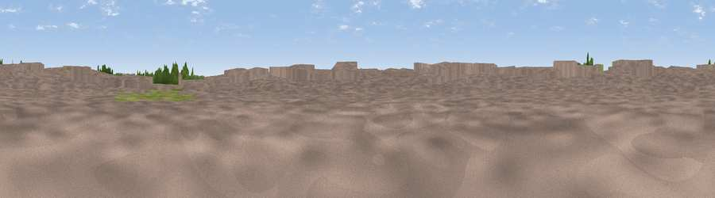

Viewpoint near Flixborough
#42378 in England · top 85% of its area beats it · near FlixboroughWhere it is
The exact computed spot (SE 88924 13600). Click the marker for map links.
The view, rendered

A 360° render of this exact spot computed from the terrain model, tree cover and land cover — summer colours, afternoon light, calibrated against photographs of famous viewpoints. Real trees, hedges and buildings will differ in detail.
The panorama
Grey silhouette: terrain skyline in each direction (720 bearings, Earth curvature and refraction included). Dashed green: skyline with trees (+15 m) and buildings (+8 m) as obstacles. Blue strip: how far the ground is visible on each bearing.
Where the view opens
Wedge length = distance to the farthest visible ground on that bearing (vegetation-aware). Rings at 10, 25 and 50 km.
What fills the view
48% built-up · 22% cropland · 16% woodland · 14% grassland
Angular shares of the visible panorama (visual magnitude), not map area. Landscape diversity 0.56 (0–1 Shannon).
Key numbers
More beautiful places nearby
The staircase of upgrades: each row has a higher view potential than everything closer. Driving times are estimates from straight-line distance, calibrated against real road routing — check an actual route before setting out.
| Place | Direction | Drive | Score |
|---|---|---|---|
| Sheffield's Hill | ENE · 3 km | ~7 min | 33.3 |
| Viewpoint near Burton upon Stather | NNW · 4 km | ~10 min | 53.6 |
| Viewpoint near Burton Stather | NNW · 6 km | ~13 min | 59.1 |
| Viewpoint near Burton Stather | NNW · 7 km | ~14 min | 60.6 |
| Viewpoint near South Cave | NNE · 19 km | ~33 min | 60.9 |
| Viewpoint near South Newbald | N · 21 km | ~35 min | 64.9 |
| Viewpoint near Claxby | SE · 28 km | ~44 min | 70.5 |
| Viewpoint near Claxby | SE · 29 km | ~46 min | 71.5 |
53.61141, -0.65737 · source: osm peak · position refined by local search. Computed location — check access rights before visiting.